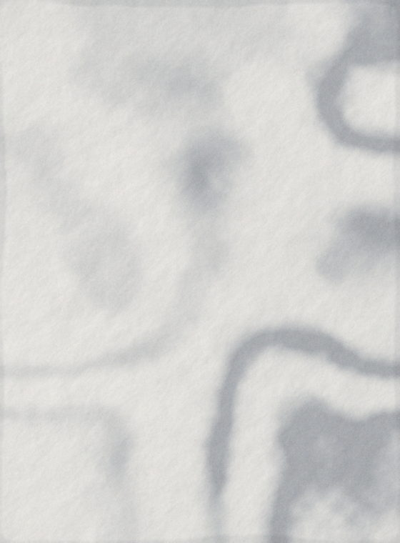

Die vier Rollen
Öffnen — Dokument, Detail
Die Frage, die diese Bewegung beantwortet, lautet: Woher kommt das hier? Ein Schnitt beantwortet sie nicht. Die große Fassung (Bibliothekskarte → Editor) steht als Moment 4 weiter unten; hier die kleine für Blätter, die keinen sichtbaren Ursprung haben.
Fällig Freitag, 21. November · aus „Zellbiologie · Vorlesung 7"
Wechseln — Modul, Ansicht
Die Frage lautet: Bin ich vor oder zurück gegangen? Acht Punkt Versatz genügen, um das zu sagen. Kein Maßstab, kein Schatten, keine Blende — eine Ansicht ist kein Gegenstand, der auffliegt.
Übergeben — Modul zu Modul
Velums Signatur, hier in der kleinsten Fassung: ein Absatz wird eine Karte.
Die ausführliche steht als Moment 1. Der Flug läuft nicht neben dem Faden her, sondern
auf ihm — die Bahn wird Punkt für Punkt aus dem Pfad gelesen, den
MOCK.thread() gespannt hat.
Wasser folgt dem Potentialgefälle, nicht der Konzentration allein.
Bestätigen — erledigt, gespeichert, bewertet
Der Haken zeichnet sich, weil das Zeichnen die Handlung wiederholt, die man gerade gemacht hat. Danach steht die Zeile eine volle Sekunde still: diese Pause ist das Rückgängig. Deshalb braucht Velum kein „Rückgängig"-Banner.
Die fünf Momente
1 · Die Übergabe — Auswahl wird Lernkarte
Der wichtigste Moment der App. Ein markierter Satz aus der Vorlesungsnotiz verdichtet sich zur Karte, wandert zu den Lernkarten und der Zähler zählt hoch — und dazwischen wächst der Faden mit, vom Ursprung zum Ziel. Er ist 60 ms vor der Karte da: erst liegt der Weg, dann kommt, was ihn geht.
Die Membran ist selektiv permeabel. Was hindurch darf, entscheidet nicht die Größe allein.
Osmose ist die Diffusion von Wasser durch eine semipermeable Membran entlang des Wasserpotentials.
Prof. Wendt nennt das Potential in der Übung „das eigentliche Gefälle".
8 heute fällig
- Satz 1
- 0 – 180 ms Verdichten · springQuick · Breite/Höhe der Auswahl → Kartenmaß, Absatz auf 0,32
- Satz 2
- 120 – 600 ms Flug · springBouncy · Ort auf dem Fadenpfad, Maßstab 1 → 0,42, Drehung −4° → 0°
- 120 – 540 ms Faden ·
--t-hand420 ms · Weglänge 0 → voll, Richtung Ursprung → Ziel - Satz 3
- 600 – 780 ms Ankunft · springQuick · Zähler 23 → 24, Zielpunkt bekommt den Ink-Ring
- Kurve
- cubic-bezier(.280,.224,.224,1.370)
- Reduce
- 360 ms. Kein Flug, keine Bahn. Der Faden erscheint auf voller Länge (120 ms), 120 ms später zählt das Ziel hoch und bekommt seinen Ring. Die Reihenfolge Ursprung → Ziel bleibt, der Weg fällt weg.
2 · Erledigen — und das andere Ende weiß es
Kreis wird Haken, Zeile verabschiedet sich, Nachbarn schließen die Lücke. Dazu das, was keine reine Aufgaben-App kann: In derselben Sekunde wird am anderen Ende des Herkunftsfadens — in der Notiz, aus der die Aufgabe stammt — sichtbar, dass sie erledigt ist. Der Faden zwischen beiden Karten ist keine Zierde: es gibt diese Kante wirklich.
Färbeprotokoll: Fixierung 10 min, dann dreimal spülen.
- Haken
- 0 – 180 ms springQuick ·
stroke-dashoffset15 → 0, Kreisfüllung 0,72 → 1, Ring 1,5 → 0 pt - Verweildauer
- 180 – 1180 ms nichts bewegt sich. Die Pause ist das Rückgängig.
- Abgang
- 1180 – 1420 ms Deckkraft 1 → 0, 16 pt nach rechts
- Lücke
- 1420 – 1680 ms Höhe und Innenabstand auf 0,
--ease - Kurve
- cubic-bezier(.239,.071,.325,.913)
- Reduce
- Der Haken ist da statt gezeichnet (120 ms Deckkraft). Die 1000 ms Verweildauer bleiben unverändert — sie sind Bedienlogik, nicht Bewegung; ohne sie verlöre man das Rückgängig. Die Zeile blendet aus (120 ms), die Lücke schließt ohne Weg.
3 · Karte bewerten — Drehung, Wisch-Rückmeldung, Intervall
Die Perspektive sitzt am Behälter (1200 px), nicht an der Karte. Die Kurve schwingt um 0,8 % über: die Karte dreht 181,4° und kommt zurück — das macht sie zum Gegenstand statt zur Textur. Die Intervall-Reihe darunter ist ein Faden mit Punkten und aktualisiert sich, während man wischt. Die Karte lässt sich mit der Maus ziehen.
Was beschreibt das Wasserpotential?
Die Summe aus osmotischem Potential und Druckpotential. Wasser läuft immer vom höheren zum niedrigeren.
„das eigentliche Gefälle"
Wodurch unterscheidet sich Diffusion von aktivem Transport?
7 von 23 bearbeitet
- Drehen
- 320 ms springStandard ·
rotateY0 → 180°, Perspektive 1200 px am Behälter - Wischen
- 1 : 1 ohne Übergangszeit, Drehung bis 8°; Schwelle 72 pt; die Vorschau aktualisiert sich ab 60 pt
- Loslassen
- 260 – 480 ms, aus der Wurfgeschwindigkeit gerechnet — eine Bézier kann sie nicht aufnehmen, also wandert sie in die Dauer
- Intervall
- Der Punkt, auf den die Note führt, bekommt den Ink-Ring; die Fadenstücke bis dorthin werden aktiv (180 ms)
- Kurve
- cubic-bezier(.216,.052,.330,1.110)
- Reduce
- Keine Drehung: die Rückseite blendet an derselben Stelle über die Vorderseite (160 ms) — dass es dieselbe Karte ist, sagt der Ort. Kein Wischen: die Zeiger-Ereignisse werden gar nicht erst eingehängt, bewertet wird über die vier Knöpfe, die ohnehin da sind.
4 · Dokument öffnen — die Karte wird der Editor
Ein Zwilling der Bibliothekskarte legt sich über die Seite und wechselt in einem Zug Ort, Breite, Höhe und Eckradius. Breite und Höhe statt Maßstab — sonst staucht das Coverbild und der Radius wächst mit. Das Regal dahinter tritt nur in der Deckkraft zurück; zwei gleichzeitige Wege würden um dieselbe Aufmerksamkeit ringen.

Wintersemester

Praktikum

Prof. Wendt
Zellbiologie
Osmose ist die Diffusion von Wasser durch eine semipermeable Membran entlang des Wasserpotentials.
14 Seiten · zuletzt geändert gestern, 19:04
5 · Herkunft zeigen — der Rückweg ist eine Bewegung
Tap auf den Herkunfts-Chip. Erst zeichnet sich die Verbindung zum Ursprung
(420 ms), dann weicht die Karte und der Quellabsatz kommt herein — der Satz, aus dem die
Karte geschnitten wurde, ist darin weiterhin markiert. Der Faden bleibt dabei gespannt und
wird Bild für Bild nachgeführt, weil der Chip auf der Karte sitzt, die gerade weicht.
Und: der Sitzungszähler bewegt sich nicht. Man behält die Hand am Faden, statt die
Sitzung zu verlassen. Gezeichnet wird mit MOCK.thread().draw() — es gibt keinen
zweiten Faden.
Was beschreibt das Wasserpotential?
Sitzung: 7 von 23 — steht still
Die Membran ist selektiv permeabel.
Das Wasserpotential ist die Summe aus osmotischem Potential und Druckpotential.
Prof. Wendt nennt es „das eigentliche Gefälle".
- Faden
- 0 – 420 ms
--t-hand· Weglänge 0 → voll, Stärke 2,5 pt (Herkunft), aktiv - Halten
- 420 – 580 ms nichts bewegt sich — der Weg soll gelesen werden, bevor er begangen wird
- Weg
- 580 – 900 ms springStandard · Karte −38 % nach links (0,5 Deckkraft), Quelle von rechts herein
- Nachführen
- Der Faden wird während dieser 320 ms Bild für Bild neu gerechnet
- Zurück
- Quelle hinaus (320 ms), dann
drawBack()(420 ms): der Faden zieht sich zum Chip zurück, also dorthin, wo der Finger war - Kurve
- cubic-bezier(.216,.052,.330,1.110) · Faden
--ease-spring - Reduce
- Nichts weicht, nichts kommt herein. Der Faden erscheint auf voller Länge (120 ms), die Quelle blendet an ihrem Platz auf (160 ms), die Karte wird nur ruhiger. Dieselbe Beziehung, ohne Weg.
Kleinbewegungen
Zeigen, Drücken, Laden, Staffeln, Streak, Wellenform
Sechs Bewegungen, die niemand bemerkt, solange sie stimmen. Fünf davon verschwinden unter Reduce Motion nicht, sie wechseln ihr Mittel: Fläche statt Maßstab, Ziffer statt Ausschlag, gemeinsames Erscheinen statt Staffelung.
Zeigen und Drücken
Zeigen 180 ms, nur Fläche. Drücken 120 ms, Maßstab 0,98 — die einzige Stelle, an der etwas schrumpft, und der Finger ist der Grund.
Laden: Skelett statt Spinner
Das Skelett hat die Form dessen, was kommt — man sieht vorher, wie viel es ist. Der Puls ist ein Atmen der Deckkraft, kein wandernder Glanz: ein Glanz behauptet einen Fortschritt, den niemand kennt.
Wird geladen
Listen erscheinen gestaffelt
36 ms Schritt, höchstens zwölf Einträge weit. Bei zwanzig Zeilen wäre die letzte eine halbe Sekunde zu spät — und eine Liste, die tröpfelt, kann man nicht überfliegen.
Der Streak-Punkt füllt sich
Der Streak ist ein Faden aus Punkten: gefüllt = erledigter Tag. Der Punkt allein wäre eine Zahl — der Faden macht daraus eine Folge.
3 Tage in Folge · heute offen
Die Wellenform beim Aufnehmen
Die einzige Dauerbewegung im System, und sie hat einen harten Grund: Sie sagt „das Mikrofon hört gerade", und das muss ununterbrochen wahr bleiben.
Vorlesung 7 · 00:00
Der Zähler rollt
Und zwar nur, wo er sich wegen einer Handlung ändert. Zahlen, die sich beim Laden hochzählen, behaupten eine Ursache, die es nicht gab.
Was absichtlich nicht bewegt wird
Fünf Bewegungen, die man erwarten würde und die hier fehlen. Jede mit dem Grund, aus dem sie fehlt.
- Der heutige Tag pulsiert nicht. Velums März-Spec §8 sieht für den Kalenderpunkt „scale 1.0 → 1.05, 2 s, repeat" vor. Eine Dauerbewegung, die keinen Zustandswechsel meldet, ist Zierrat — sie zieht in jeder Sekunde Aufmerksamkeit ab, in der man liest. Dass heute heute ist, sagt der Ink-Ring, ohne sich zu rühren.
- Die Liste weicht beim Öffnen nicht zurück. Sie tritt nur in der Deckkraft zurück. Der Weg der Karte erklärt die Herkunft schon; ein zweiter gleichzeitiger Weg würde mit dem ersten um dieselbe Aufmerksamkeit ringen.
- Der Tab-Wechsel bewegt den Inhalt nicht. Nur die Kreuzblende aus der Rolle „Wechseln". Tabs sind Orte, keine Wege — wer zwischen zwei Orten hin und her schaltet, will nicht jedes Mal reisen.
- Kennzahlen zählen beim Laden nicht hoch. „6 Aufgaben · 23 Karten · 12 Tage in Folge" stehen sofort da. Der Zähler rollt nur, wo eine Handlung ihn geändert hat.
- Trennlinien und Ränder animieren nie. Sie sind keine Fäden — und was kein Faden ist, wächst auch nicht. Ein Rahmen, der sich einzeichnet, sähe aus wie eine Beziehung und wäre keine.
Feder → Bézier, vorgerechnet
Velums März-Spec §9 nennt vier Federn und zwei easeInOut-Werte. Für jede Feder
ist die Sprungantwort
x(t) = 1 − e−ζωt·(cos ωdt + ζ/√(1−ζ²)·sin ωdt)
mit ω = 2π/response ausgewertet, das Zeitfenster bei 2 % Restweg beendet
und eine cubic-bezier mit vier freien Parametern angepasst (Nelder-Mead,
120 Stützstellen). Der Fehler ist das quadratische Mittel über den ganzen Verlauf,
gemessen in Prozent des Weges.
| Feder | response / damping | Fenster | cubic-bezier | Fehler | Überschwingen Feder → Bézier |
|---|---|---|---|---|---|
| springQuick | 0,25 / 0,85 | 183,1 → 180 ms | .239, .071, .325, .913 | 0,36 % | 0,63 % → 0 % |
| springStandard | 0,40 / 0,80 | 311,3 → 320 ms | .216, .052, .330, 1.110 | 0,33 % | 1,52 % → 0,80 % |
| springBouncy | 0,50 / 0,65 | 478,9 → 480 ms | .280, .224, .224, 1.370 | 0,76 % | 6,81 % → 7,30 % |
| springGentle | 0,60 / 0,90 | 415,1 → 420 ms | .271, .115, .268, .755 | 0,92 % | 0,15 % → 0 % |
| quick (easeInOut) | — / — | 150 ms | .42, 0, .58, 1 | 0 % | 1 : 1 übernommen |
| standard (easeInOut) | — / — | 300 ms | .42, 0, .58, 1 | 0 % | 1 : 1 übernommen |
Wo die Übersetzung nicht aufgeht — zwei Stellen, beide benannt statt versteckt:
- Das Unterschwingen nach dem Überschwingen. springBouncy schwingt um 6,8 % über
und danach um 0,46 % unter. Eine
cubic-bezierbildet das Überschwingen ab, das Unterschwingen nicht — sie kehrt einsinnig zurück. Zwei verkettete Animationen könnten es. Sie werden hier bewusst nicht verkettet: das Unterschwingen fiele in dieselben 60 ms, in denen beim Übergeben der Zähler hochzählt, und zwei Bewegungen an einer Stelle heben sich gegenseitig auf. - Die Geschwindigkeit beim Loslassen. Eine Feder nimmt sie auf, eine Bézier hat eine feste Anfangssteigung. Beim Wischen einer Lernkarte wandert sie deshalb in die Dauer: 260 ms bei schnellem Schnippen, 480 ms bei ruhigem Loslassen, dieselbe Kurve. Das ist keine Feder, aber es ist ehrlich — und der Unterschied zwischen einem Wurf und einem Legen bleibt spürbar.